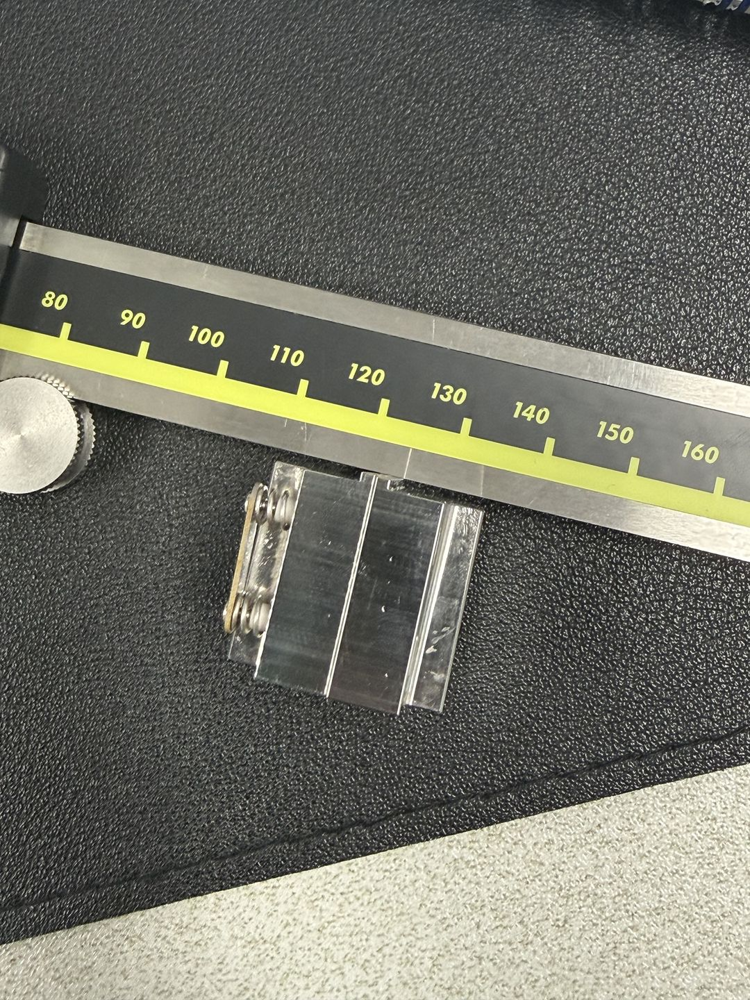
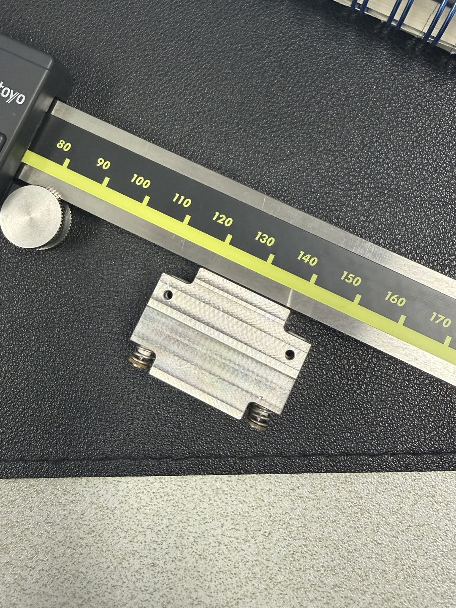
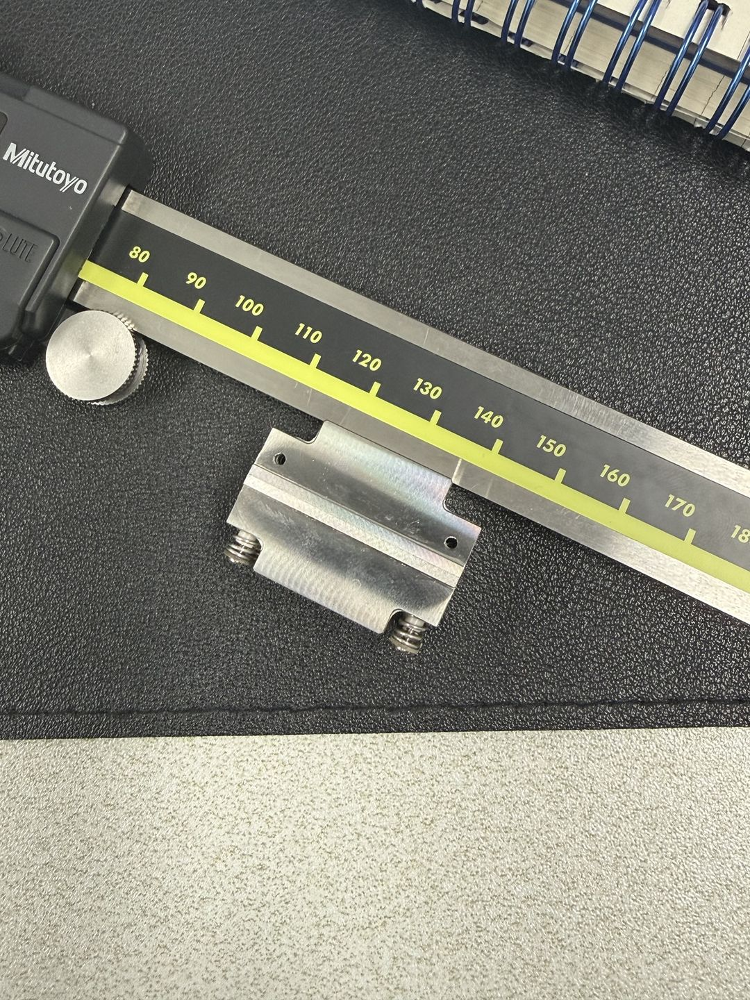
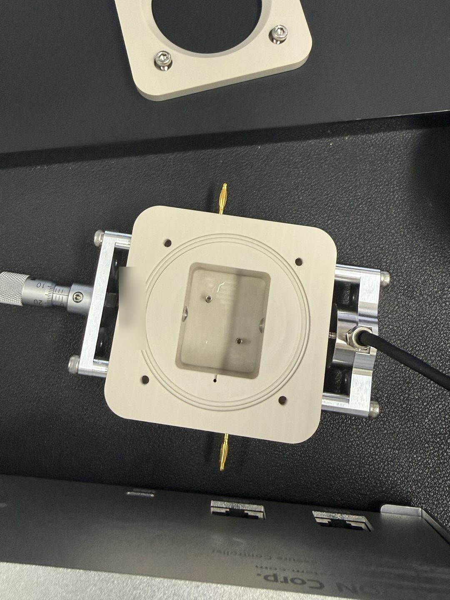
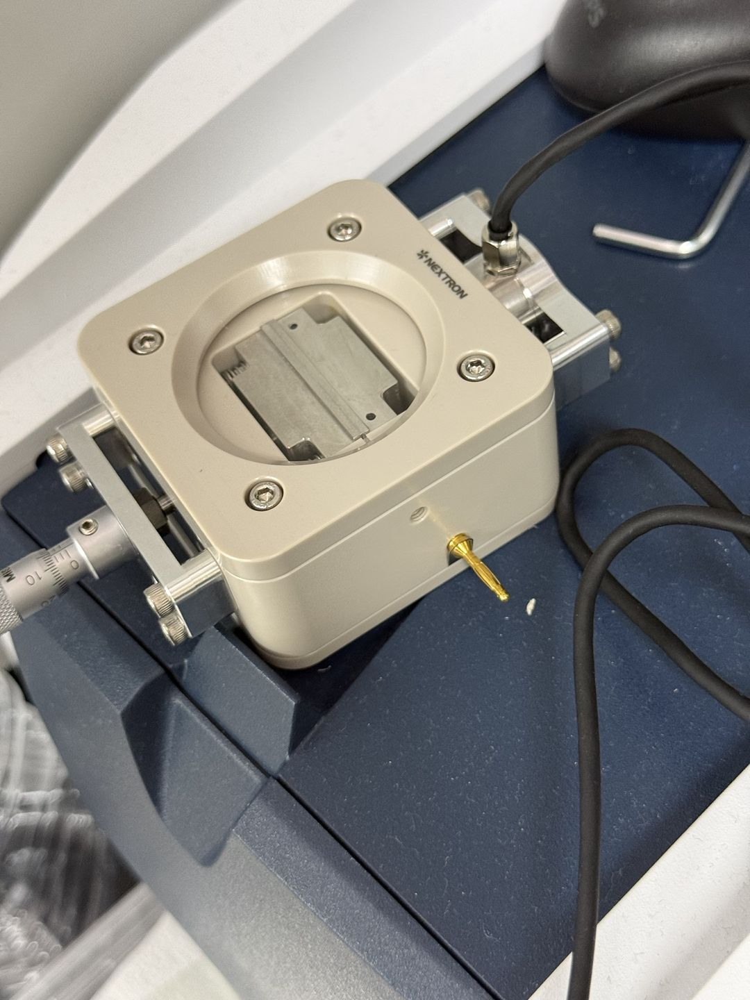

실제 CAD 90개 부품을 불러오는 중…
부품을 누르면 이름이 나타납니다.
CAD: 261101c 레버식 + 11/2 seat·clamp_plate 수정. 원본 mm 좌표를 유지한 90개 부품. 분해 시에만 위치를 벌립니다. 이전 리니어 방식·10단계 연습 ↗
CAD: 261101c 레버식 + 11/2 seat·clamp_plate 수정. 원본 mm 좌표를 유지한 90개 부품. 분해 시에만 위치를 벌립니다. 이전 리니어 방식·10단계 연습 ↗
실물 홀더를 캘리퍼로 잰 값과 사진입니다. 측정 불확도는 아직 반복 측정하지 않아 모릅니다. 넥스트론 도면에서 읽은 값은 비공개 자료라 이 페이지에 넣지 않았습니다.





| 항목 | 실측 | 이전 가정 |
|---|---|---|
| 위에서 본 크기 | 22.02 × 30.99 mm | 24.4 × 31.0 |
| 높이(가장 높은 면) | 21.01 mm | 25 (결합부 표의 홀더 외형) |
| 낮은 면 높이 | 19.94 mm (가장 높은 면보다 1.07 낮음) | 없음(직육면체로 가정) |
맞음. 어댑터 v2의 홀더 구멍은 23.0 × 31.3 mm이고 받침 윗면은 z −21.0입니다. 실측 22.02 × 30.99 mm는 구멍 안에 들어가고(여유 폭 0.98, 길이 0.31), 높이 21.01은 받침 기준과 같습니다. 수정은 필요 없습니다. PLA 출력은 출력 보정판(261110p)을 씁니다.
남은 확인: 스프링과 스트립이 홀더에서 떨어지는지, 턱의 폭·높이, 노치 위치는 아직 재지 않았습니다. 위 3D 모델의 홀더 외형은 아직 이전 가정(24.4 × 31 × 25)입니다. 실측값으로 모델을 바꾸지 않았습니다.